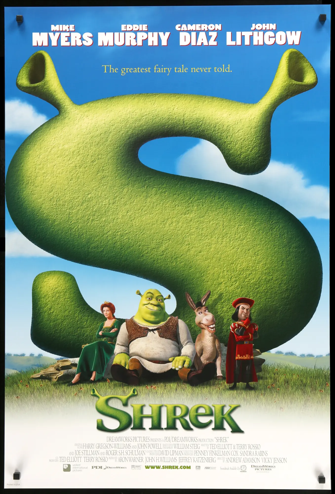

La primera vez
en el cine.
Hay películas que te gustan por lo que cuentan. Shrek también me gusta por el recuerdo de cuando mi hermana mayor me llevó al cine.
Un recuerdo compartido
Shrek fue la primera película que vi en el cine. Me llevó mi hermana mayor y guardo un recuerdo muy bonito de aquel momento. Ese es el motivo principal por el que ocupa un lugar especial entre mis películas favoritas: para mí está unida a una persona y a una experiencia de la infancia.
No necesito reconstruir cada detalle de aquel día para saber lo que significa. Al pensar en la película aparece también ese primer encuentro con el cine, acompañado de mi hermana. El recuerdo y la historia han terminado formando parte de la misma cosa.
Un cuento con otro protagonista
La película, estrenada en 2001, parte de una idea que cambia el centro de los cuentos tradicionales: el protagonista es un ogro que vive en una ciénaga. A su alrededor aparecen personajes de cuento, un burro que habla y una aventura que juega con lo que esperamos de ese mundo.
La aventura lleva a Shrek y a Asno a buscar a la princesa Fiona, mientras el ogro intenta recuperar la tranquilidad de su ciénaga. La historia juega con personajes que parecen familiares y los coloca en situaciones que alteran el cuento que uno esperaba encontrar.

Lo que se queda
Mi película favorita también es un recuerdo con mi hermana.
Hay aficiones que se explican por una técnica, un estilo o una historia. Otras se entienden mejor a través de las personas con las que las descubrimos. En este caso, mi elección empieza ahí.
Por eso Shrek tiene su espacio en esta web. Además de una película, representa una pequeña parte de mi historia personal: la primera visita al cine y un recuerdo que sigue siendo bonito con el paso del tiempo.
Una canción para volver a Shrek
«All Star», de Smash Mouth, acompaña ese recuerdo de la película. Aquí tiene su propio espacio para escucharla.